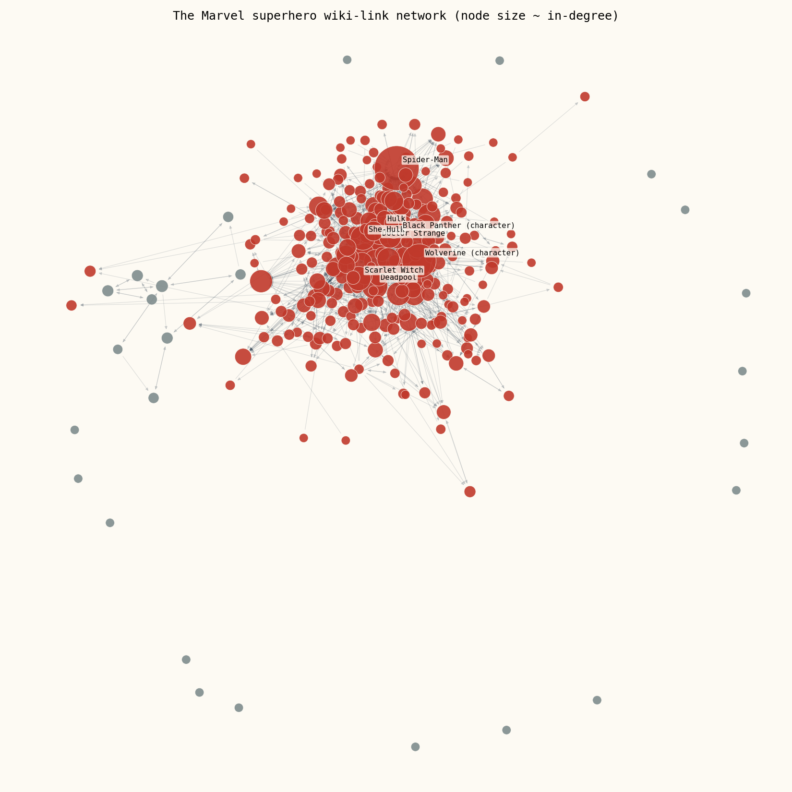

Who links to Spider-Man? Mapping the Marvel superhero wiki
This week's exercise was basically "go nuts with your LLM": no fixed method, just a dataset and a free afternoon. We got 303 Marvel superheroes and a pile of hyperlinks between their Wikipedia articles, and asked the obvious first question — what does this network actually look like?
00The dataset
Our shared playground for the semester is a directed network built from Wikipedia's Category:Marvel Comics superheroes: 303 characters, 1,784 directed edges. An edge A → B means A's article text links to B's — navbox and template links were deliberately stripped out, so two X-Men don't get an edge just because they sit in the same infobox roster. Redirects are resolved on both ends, and the snapshot is frozen as of 2026-08-26, so it won't drift under us for the rest of the semester.
nx.DiGraph()
only knows about nodes it's seen on an edge. We loaded the full node table first
(G.add_nodes_from(nodes.node_id)) specifically so the isolates would still show up as,
well, isolates, instead of quietly disappearing from the dataset.
01Degree distribution: one axis lies, the other doesn't
The first thing we plotted was the simplest possible summary: how many links does each character's article have, in total? On a linear axis it looks like nothing special — a pile of small characters, and then Spider-Man sitting alone in a bar so far right we had to squint to find him. Log-log axes are what actually make the shape legible: a long, fairly straight tail, which is the visual signature of a heavy-tailed degree distribution rather than something bunched around an average.

Most characters are minor in this network — more than half sit at degree 10 or below — while a small handful of household names absorb a huge share of the links. That's the classic "rich get richer" shape you'd expect from a citation-like network: newer or more obscure characters' articles link back to Spider-Man and the Hulk because that's how you contextualize a Z-lister, but the reverse essentially never happens.
02In-degree vs. out-degree: fame is not the same as generosity
Splitting degree into direction tells a more interesting story than the total does. In-degree is roughly "how famous is this character" — how many other articles bother to mention and link them. Out-degree is closer to "how much backstory does this article cite" — how many other characters get namechecked in its text. Those turn out to be almost entirely different rankings.

| Most linked-to (in) | in-deg |
|---|---|
| Spider-Man | 106 |
| Hulk | 64 |
| Wolverine | 60 |
| Doctor Strange | 50 |
| Deadpool | 33 |
| Most link-heavy (out) | out-deg |
|---|---|
| Betsy Braddock | 28 |
| Cloak and Dagger | 24 |
| Adam Warlock | 22 |
| Venom | 21 |
| She-Hulk | 20 |
Why don't the same characters top both lists? Spider-Man's article is the reference point — dozens of other characters' pages mention him to establish a rogues'-gallery connection or a "created by" lineage, but his own article, long as it is, only has so many other individual character links relative to how often he's cited elsewhere. Meanwhile characters like Betsy Braddock (Psylocke) or Cloak and Dagger have complicated, retcon-heavy histories — multiple identities, team memberships, tangled family trees — which means their articles cite a lot of other characters by name without necessarily being famous enough themselves to get cited back at the same rate. In-degree tracks cultural gravity; out-degree tracks narrative complexity, and those are just different things.
03The network, drawn
A force-directed layout, colored by connected component and sized by in-degree:

One giant, messy, mutually-referencing core, with a visible gradient of hub sizes from Spider-Man down through Hulk, Doctor Strange, and Wolverine — and then a scatter of gray dots that never made it in at all.
04Who got left out, and why
91.4% of the network (277 of 303 characters) sits in one giant connected component. The rest splits into exactly two kinds of exile: 17 true isolates with no edges at all, and one small self-contained clique of 9 characters that link to each other but to nobody else.
The 9-character clique is the more interesting case, because it isn't noise — it's a real story. All nine (Snapdragon, Radian, Toxyn, Vyking, Blackthorn, Shear, Scaredycat, Scatterbrain, Backhand) are cast members of Strikeforce: Morituri, a self-contained 1980s Marvel series about ordinary humans given superpowers to fight an alien invasion — powers that are guaranteed to kill them within a year. It ran in its own corner of the Marvel universe with almost no crossovers into mainstream continuity, and the link graph reproduces that editorial isolation almost perfectly: these nine articles all cite each other, and essentially nothing else in the category links to any of them. A closed-off comic gets a closed-off subgraph.
The 17 true isolates are a grab-bag, but a pattern emerges on inspection: they're either extremely minor characters whose stub articles don't have enough prose to link anyone (Breeze Barton, Captain Midlands, Hellfire), or characters who sit outside the mainstream Marvel continuity entirely — Super Rabbit is a 1940s Timely Comics funny-animal character predating the Marvel name itself, Solarman originated at a different publisher (Pendulum Press) before a licensing deal folded him in, and Miracleman carries a famously tangled British rights history (originally "Marvelman") that has kept him narratively siloed from the rest of the universe for decades. Even Baymax, familiar as he is from Big Hero 6, comes from a self-contained property that just doesn't reference — or get referenced by — the wider Marvel cast on Wikipedia.
The throughline for both groups: this is a network of article text, not a network of fictional relationships. A character can have a long comics history and still be a graph isolate if nobody happened to write "see also"-style prose linking them to a teammate. Isolation here means "under-connected on Wikipedia," not "unimportant" — a distinction worth remembering every time we build a graph out of a proxy for the thing we actually care about.
05Extra credit: small world, and PageRank disagrees with the crowd
A few more numbers that surprised us enough to chase:
The giant component is a small world in the literal technical sense: the average shortest path between any two of its 277 characters is under 2.7 hops. Six degrees of Spider-Man turns out to be closer to three. Combined with a clustering coefficient of 0.31 — your links' links are quite likely to link each other too — this looks a lot like the small-world networks we'd expect from any encyclopedic cross-referencing structure, superheroes or not.
The real surprise was PageRank. Ranking by raw in-degree and ranking by PageRank mostly agree at the very top (Spider-Man, Hulk, and Wolverine lead both lists) but diverge lower down in a way that's actually informative. Black Cat has an in-degree of only 21 — not even in the top 10 by raw count — yet she ranks 5th by PageRank, ahead of characters with noticeably more incoming links. Same story for Mayday Parker (Spider-Girl), in-degree 14, PageRank rank 7. The common thread is obvious once you see it: both are linked to disproportionately from inside Spider-Man's own high-traffic orbit. PageRank is rewarding who links to you, not just how many do — a handful of links from the network's biggest hub outweigh a pile of links from nobodies. It's a clean, small-scale demonstration of exactly the thing PageRank was invented to capture.
06What surprised us
Going in, we expected a heavy tail and we expected a big blob of a giant component — that part wasn't surprising, it's what every real-world link network looks like. What we didn't expect was how legible the disconnected pieces would turn out to be. We assumed the isolates and the stray small component would just be noise — obscure characters, nothing to say. Instead they told a coherent story about publishing history: a whole self-contained 1980s miniseries surviving intact as its own connected component, and an isolate list that reads like a tour of Marvel's editorial edge cases — golden-age funny animals, licensed properties, and a British rights dispute that's still, in a sense, visible in the shape of a 2026 Wikipedia link graph. We came in for a degree distribution and left with a small archaeology lesson.
— [Group Name Placeholder], Week 1 · built with pandas, networkx & matplotlib from a frozen Wikipedia snapshot · nodes · edges